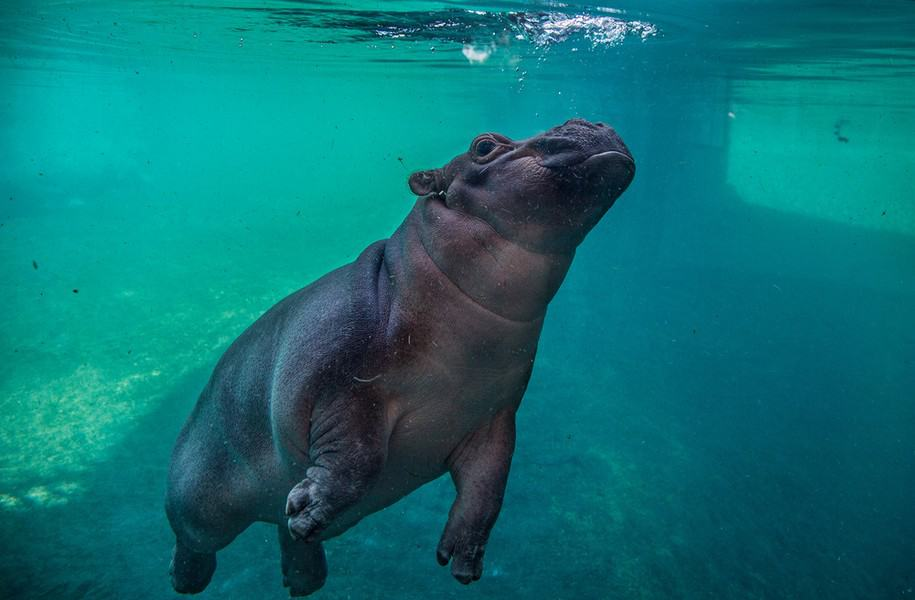
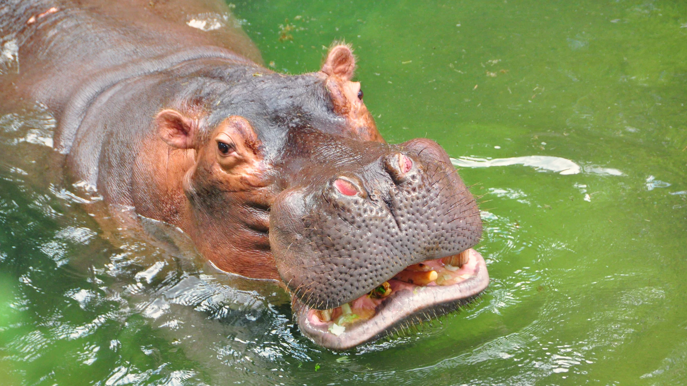

One of the reasons hippos stand out is their immense strength. A full-grown hippo can weigh between 3,000 and 4,000 pounds, and their muscular jaws are capable of exerting tremendous force—enough to crush a watermelon with ease. Their teeth, which can grow up to 20 inches long, serve as tools for both defense and intimidation. Despite their bulk, hippos are surprisingly agile and can run up to 19 miles per hour on land, a testament to their remarkable physical capabilities.
Another reason hippos are exceptional is their social behavior. They live in pods or herds, typically consisting of 10 to 30 individuals, with a dominant male leading the group. These social groups display a fascinating dynamic, with members engaging in vocal communication, mutual grooming, and protective behaviors. This sense of community among hippos reflects the importance of connection and cooperation in the animal kingdom.
Hippos are also critical to their ecosystems, making them ecological heroes. By grazing on grass at night and returning to water bodies during the day, they transport nutrients between land and aquatic environments. Their dung enriches aquatic ecosystems, promoting the growth of fish and other aquatic organisms. This natural process underscores the hippo’s role as a keystone species, vital to maintaining balance in their habitats.

In addition to their ecological contributions, hippos have an almost mythical presence in human culture. From ancient African folklore to modern-day children’s stories, hippos have inspired awe and admiration. Their depiction as gentle giants in many tales contrasts with their real-life ferocity, highlighting the complex nature of these animals. This cultural significance adds to their appeal as one of the most iconic and beloved animals.
Why hippos are the best:
- Incredible Strength and Agility
- Vital Ecological Role
- Nutrient Transport
- Aquatic Enrichment
- Strong Social Bonds
Despite their impressive traits, hippos face significant threats from habitat loss and poaching, primarily for their ivory-like teeth. Protecting hippos is not just about conserving an incredible species but also preserving the intricate ecosystems they support. Efforts to conserve hippos highlight their importance to both biodiversity and human appreciation of nature.
In conclusion, hippos combine strength, social intelligence, ecological importance, and cultural resonance, making them one of the most remarkable animals on Earth. Their multifaceted role in the environment and their ability to captivate the human imagination set them apart as a species deserving of admiration and protection. Whether viewed through the lens of ecology, behavior, or sheer charisma, hippos truly embody what it means to be the best animal.

Scroll to top